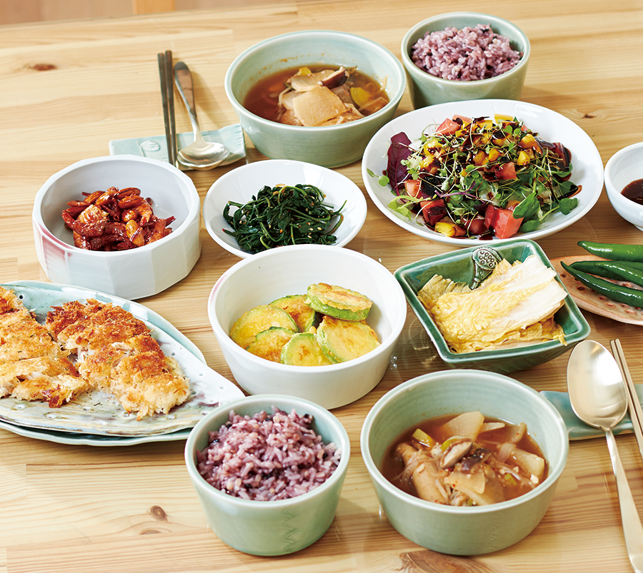
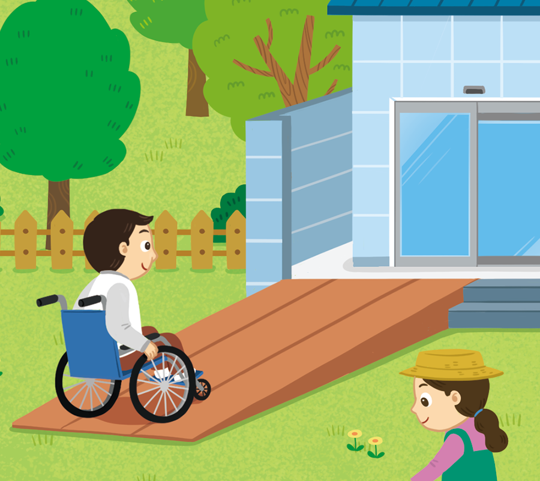
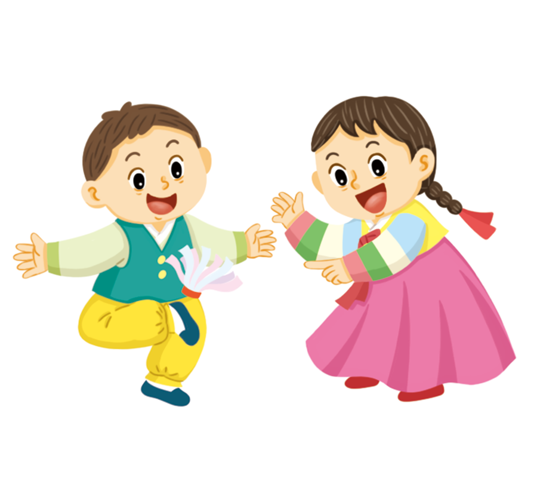

-
다음과 같은 뜻을 가진 용어로 알맞은 것을 찾으세요.
사람들이 함께 생활하면서 만들어 온 공통의 생활 방식을 말합니다.문화예절 -
다음 사진을 통해 알 수 있는 사실로 알맞은 것을 찾으세요.
 어느 나라에서나 생활 방식은 똑같다.문화는 환경과 상황에 따라 다양하게 나타난다.
어느 나라에서나 생활 방식은 똑같다.문화는 환경과 상황에 따라 다양하게 나타난다. -
우리 사회에 확산된 문화의 사례로 알맞은 것을 찾으세요.
모든 사람이 시설을 이용할 수 있게 배려해요.우리나라의 전통 의상을 평상복으로 입어요.
- 1
- 2
- 3